Spojená škola Nižná
Stredná odborná škola technická a Škola umeleckého priemyslu
Študijné odbory
Kontakt
- Adresa
- Hattalova 471, 027 43 Nižná
- Telefón
- +421 43 538 14 05
- ssnizna@ssnizna.sk
- Web
- www.ssnizna.sk
- Úradné hodiny
- Pondelok – piatok, 7:30 – 15:00
- IČO / DIČ
- 17050448 / 2022454192
- Zriaďovateľ
- Žilinský samosprávny kraj
skolstvo@zilinskazupa.sk
O škole
Spojená škola v Nižnej je moderná, dynamicky sa rozvíjajúca stredná škola. Neustále sleduje nové trendy rozvoja priemyslu a hľadá možnosti implementácie nových poznatkov do vzdelávacieho procesu. Od svojho vzniku v roku 1957 prešla mnohými systémovými zmenami, až sa stabilizovala na jednotnej platforme v podobe elektrotechnického priemyslu a grafického dizajnu. V súčasnosti pokrýva všetky potreby elektrotechnického a umeleckého priemyslu na Slovensku.
Výhody
- centrum odborného vzdelávania pre priemyselnú automatizáciu a informačné technológie
- Duálne vzdelávanie
- dielne praktického vyučovania
- spolupráca s firmami
- školský internát, školská jedáleň
- ateliér pre umeleckú tvorbu
- špičkové technické a personálne vybavenie
Krúžky
- anglický jazyk a matematika pre maturantov
- čitateľský krúžok
- športové hry – šípky, relaxačno-pohybové aktivity
- programovanie Arduino, PLC automatov
- robotika, Cisco Networking Academy
- modelovanie a programovanie hier
- online marketing, finančná gramotnosť
- krúžok regionálnej histórie, tvorivé dielne, dobrovoľníctvo
Stredná pre teba, lebo
- si talentovaný, kreatívny a podnikavý
- preferuješ kvalitné vzdelávanie
- ťa baví programovanie
- máš rád inteligentnú techniku
- chceš realizovať svoje vlastné projekty a výstavy
- ťa inšpirujú výzvy rozvoja INDUSTRY 4.0
- ťa láka duálne vzdelávanie
Výberom jedného zo školských vzdelávacích programov v študijnom odbore mechanik elektrotechnik si môžeš zvoliť svoje smerovanie pre oblasť autoelektroniky, energetiky, priemyselnej automatizácie alebo informačno-mediálnych technológií. S maturitou získaš aj výučný list a môžeš pokračovať v štúdiu na vysokej škole. Naša umelecká škola Ťa pripraví na prácu grafického dizajnéra v grafických štúdiách, reklamných i marketingových agentúrach.
Učitelia nám odovzdávali to najlepšie z ich vedomostí, zručností a skúseností. Všetko sme zužitkovali neskôr v praxi, ďalšom štúdiu či podnikaní. Škola nám dala priestor pre vlastný rozvoj, odborný rast, kreativitu, ale aj zábavu.
Fotogaléria
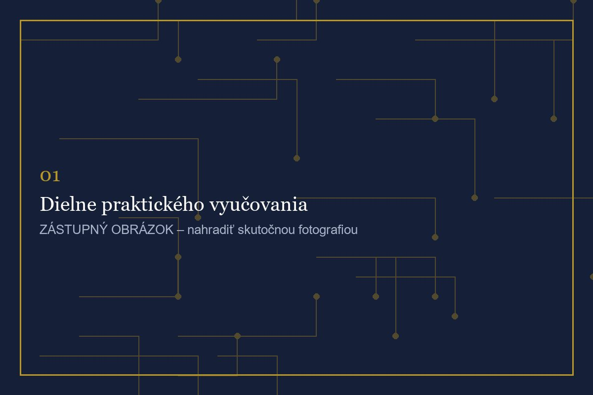
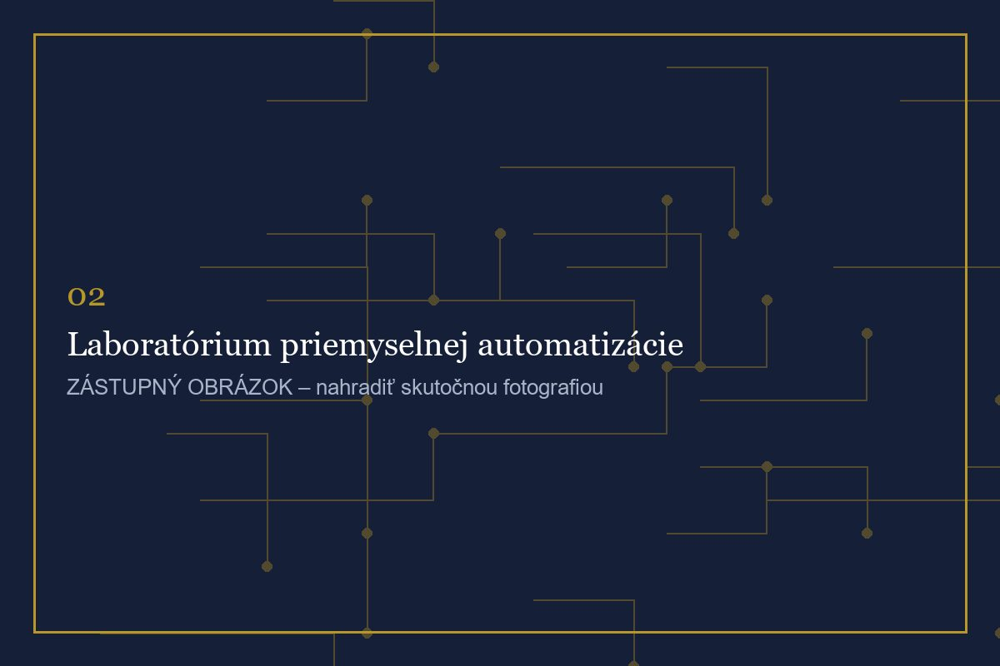
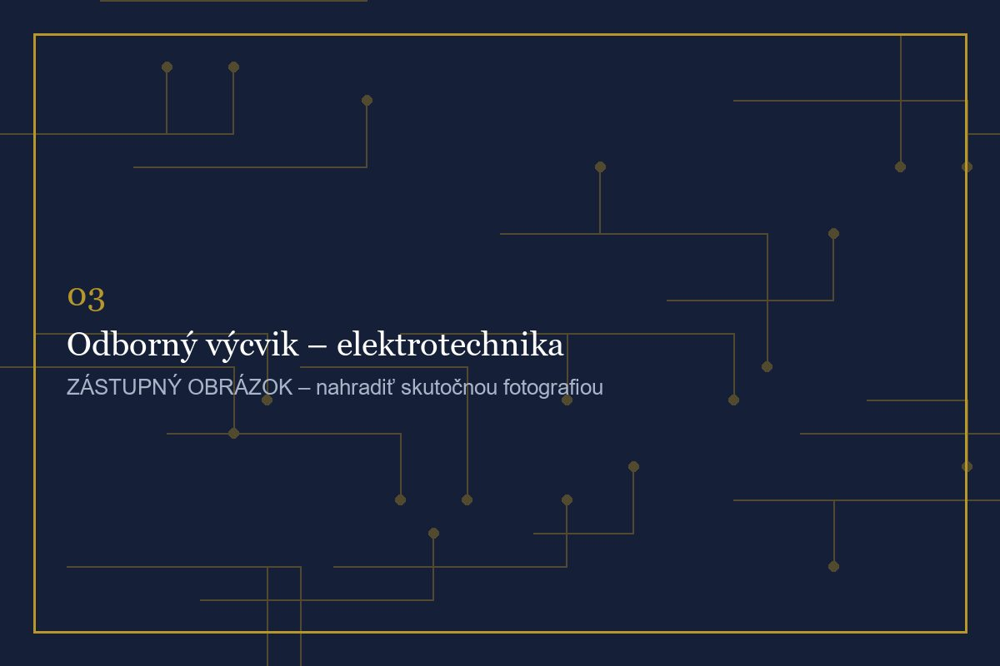
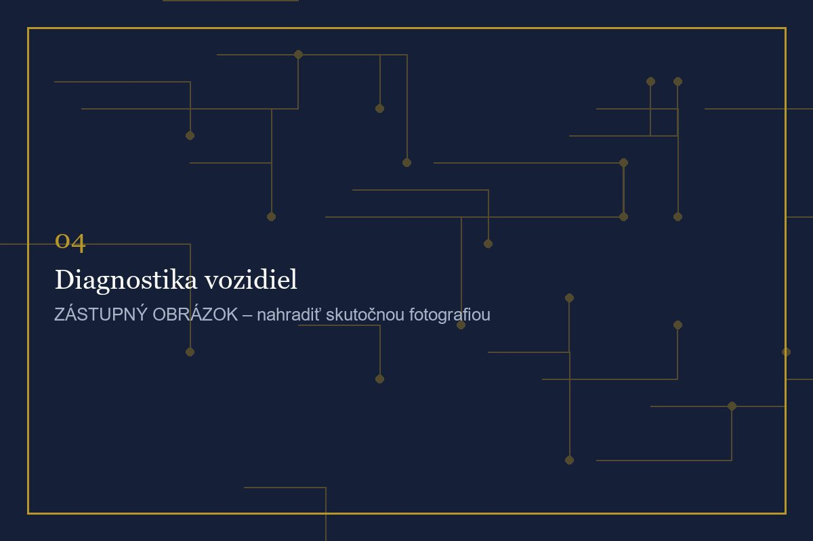
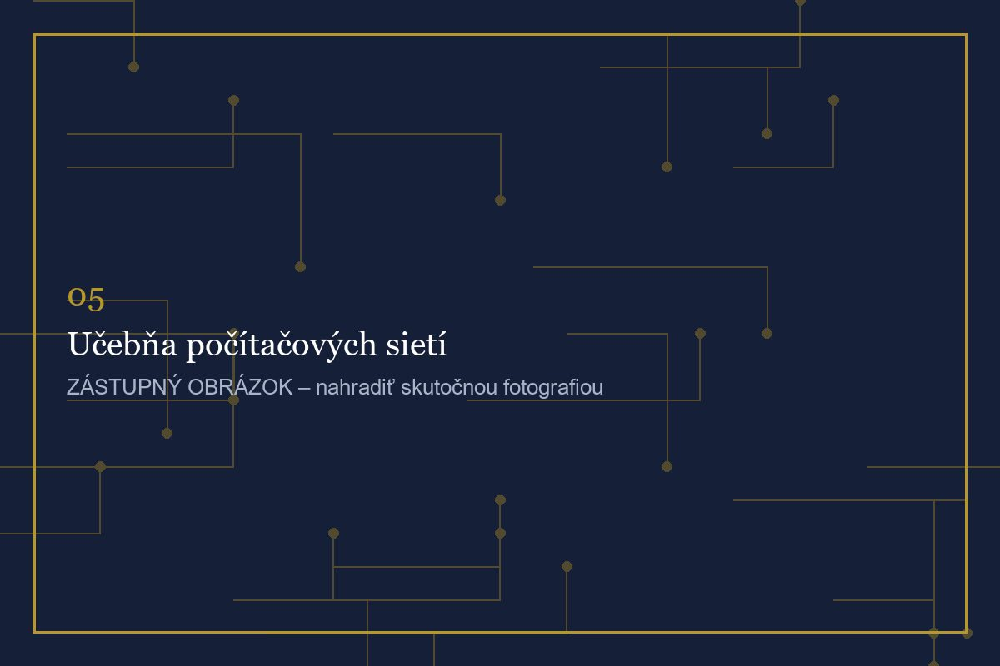
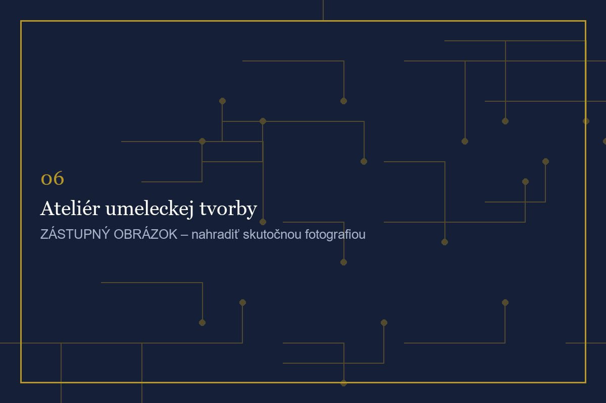
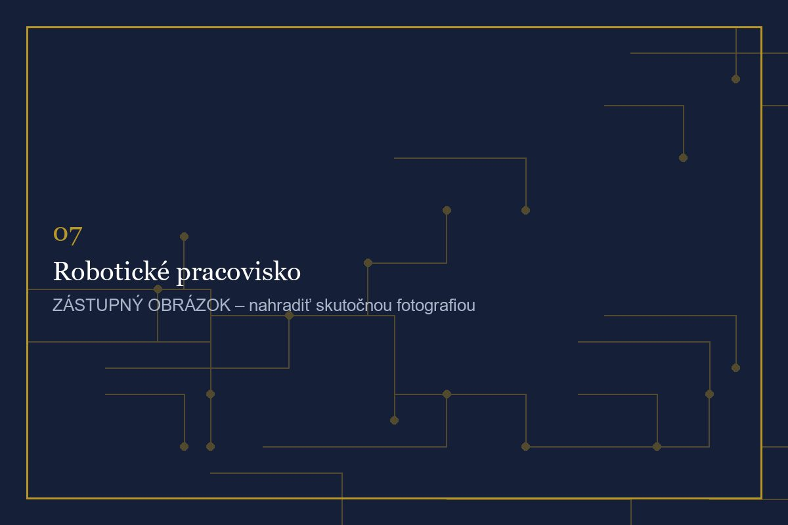
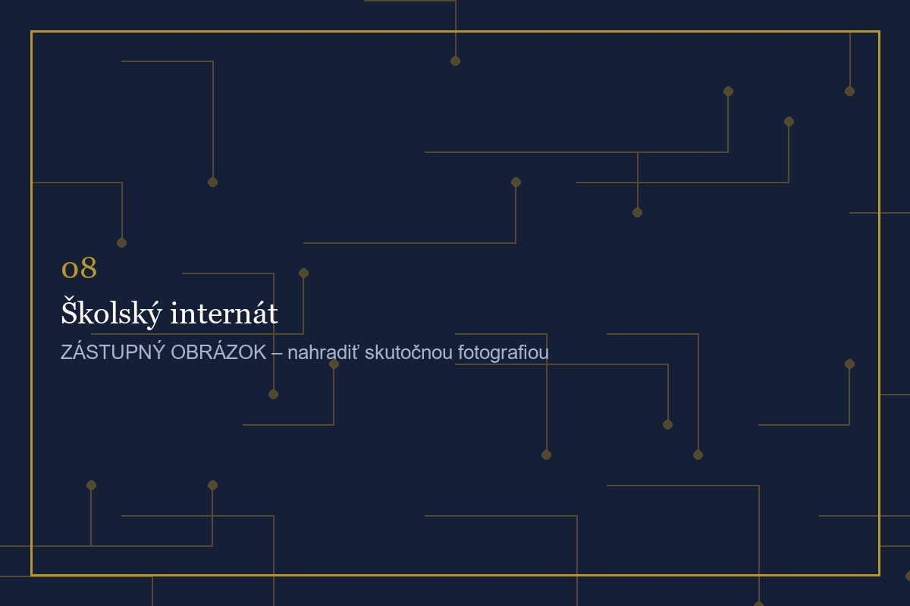
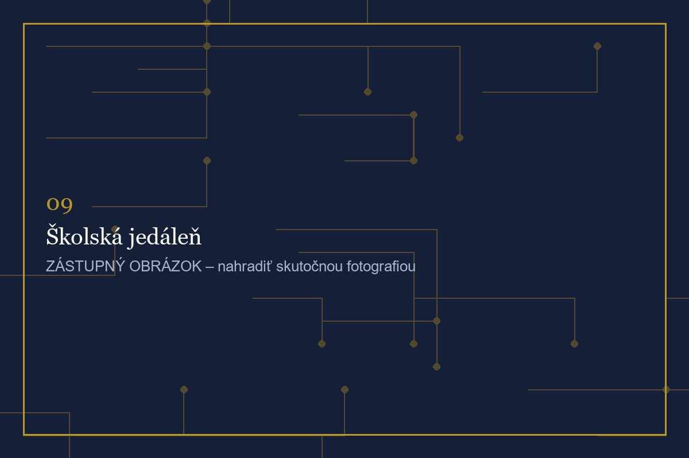
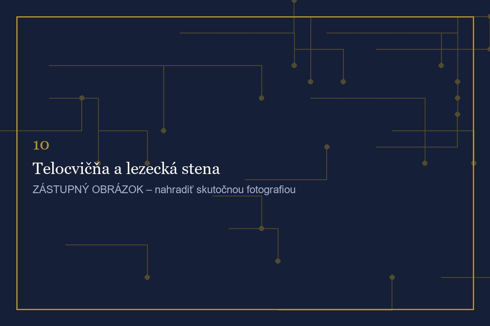
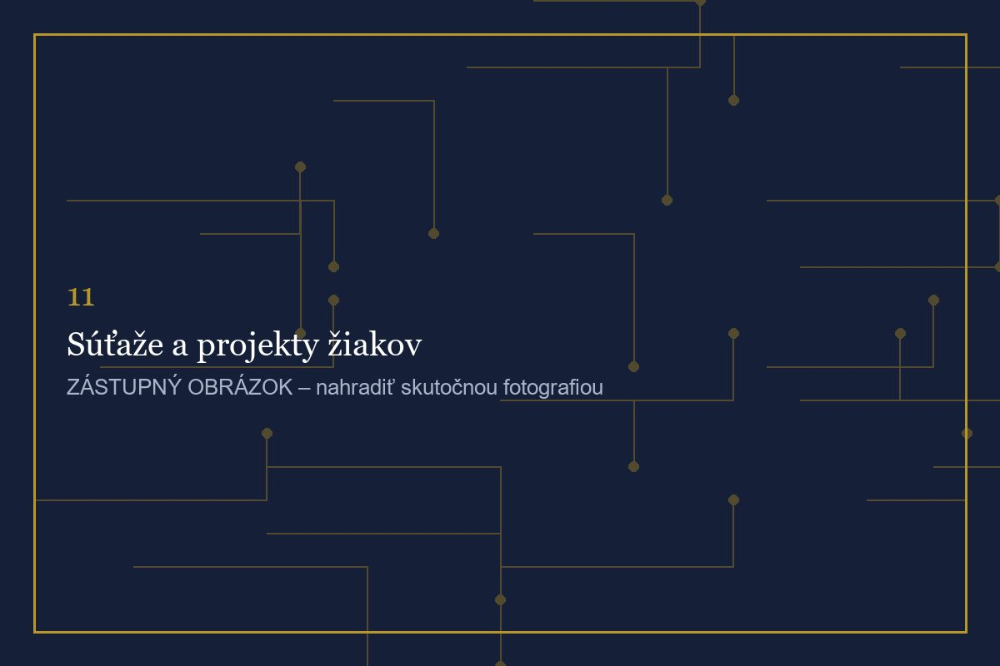